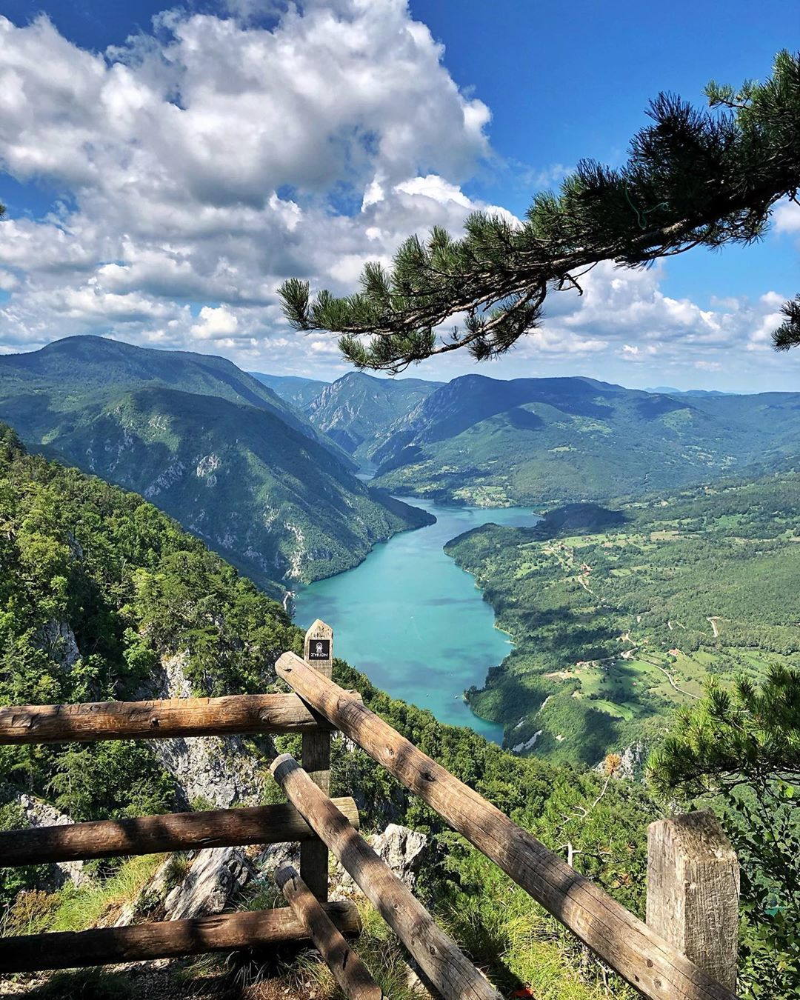
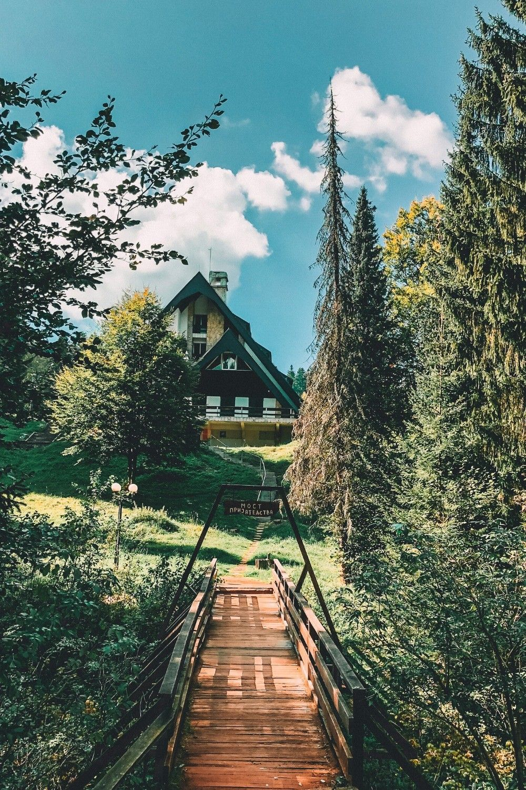

Položaj planine Tare omogućava raznovrsne turističke sadržaje i posete brojnim lokalitetima. Ekološki očuvana priroda, reljef u umerenim visinama (800–1500 m), tereni za zimske sportove, raznolik biljni i životinjski svet, blagotvorna klima i reka Drina sa veštačkim jezerima Zaovine i Perućac – čine Taru konkurentnom u odnosu na druge planine.

